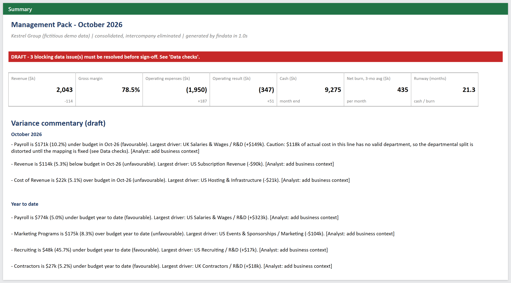
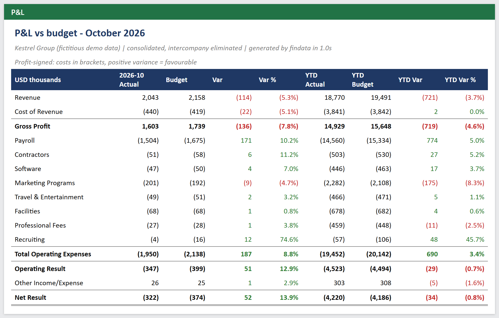
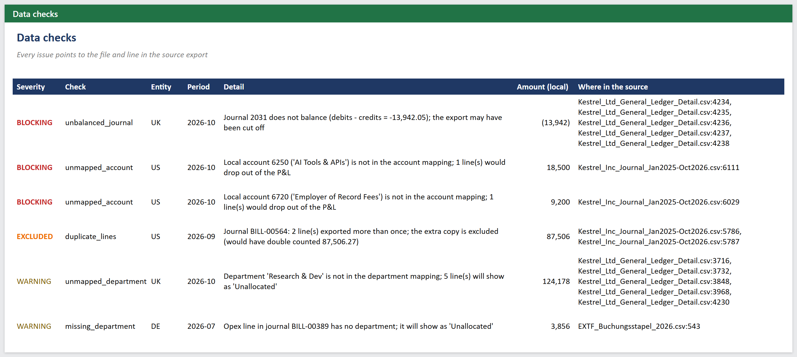

Month-end reporting automation: three accounting systems in, one validated management pack out
Demo on fictitious data. Kestrel Group is a made-up 3-entity SaaS company (dataset notes). Runtimes are measured on this dataset; the "before" column describes a typical manual process and is an estimate.

The problem
It is the first week of November and the controller is closing October. The inputs are:
- a QuickBooks journal export from the US parent (USD),
- a Xero general ledger from the UK subsidiary (GBP),
- DATEV booking batches from the German subsidiary (EUR, Windows-1252, decimal commas, dates without a year),
- the board-approved budget workbook, and a table of FX rates.
The usual routine: paste each export into a master workbook, fix date and number formats, map more than 70 local accounts to the group chart, convert currencies, strip out intercompany recharges, build budget vs actual, then write the commentary. Every month, by hand. Errors that keep the trial balance in balance, such as a bill exported twice, go straight into the numbers the CFO reads.
The solution
One command runs the whole close:
python -m findata.report --period 2026-10
flowchart TB
A[QuickBooks CSV · Xero CSV · DATEV batches] --> B[Readers, one per system]
B --> C{Data checks: 8 rules}
C -- blocking / warning --> R[Data checks sheet: file + line]
C -- duplicates --> Q[Quarantine]
C --> D[(DuckDB model: mapping, FX, intercompany elimination)]
E[Budget workbook + FX rates] --> D
D --> F[Budget vs actual]
F --> G[Rules-based variance commentary]
F --> H[Excel management pack]
G --> H
R --> H
- Read each system as-is. A small reader per format returns one standard line-level table. DATEV bookings (account + contra account + S/H flag) are expanded into double-entry lines.
- Validate before anything reaches a report. Each check points to the source file and line: unbalanced journals, duplicate exports, unmapped accounts, unknown or missing departments, missing periods, unmapped budget lines and intercompany mismatches. Results are graded blocking, excluded (quarantined automatically) or warning.
- Model in SQL (DuckDB). Local accounts map to the group chart through a CSV the client can edit in Excel. P&L converts at the monthly average rate, cash at the month-end rate. Intercompany R&D recharges are eliminated, and the budget is compared both at budget rates and at actual rates, so the FX effect is separated from operational variance.
- Draft the commentary from reconciled numbers. Each material variance (≥ USD 20k and ≥ 5% of budget) gets a sentence naming its largest driver (entity, account, department) and its FX effect. If untagged costs distort a departmental variance, the sentence warns about it. The analyst adds the why.
- Write the pack. Summary with KPIs and status, P&L vs budget (month and YTD), P&L by entity, opex by department, 22-month trend, data checks, and method notes.
The result
| Before: typical manual close (estimate) | After: this pipeline (measured on the demo data) | |
|---|---|---|
| Time from exports to a reviewable pack | 1.5 to 2 working days | ~5 seconds end to end (under 1 s for read + checks + model) |
| Data problems found before the CFO sees numbers | whatever someone happens to spot | 6 of 6 seeded issues, each with file and line |
| USD 87.5k hosting bill exported twice | inside gross margin (73.5% instead of 77.9%) | quarantined automatically |
| USD 27.7k on two brand-new accounts | silently missing from the P&L | blocks sign-off until mapped |
| R&D "USD 149k under budget" that is really mis-tagged cost | reported as a saving | flagged in the commentary |
| Variance commentary | written from scratch | drafted, ready for business context |
| Next month | same manual routine | same command; the mapping is a CSV |
The pack stays DRAFT while blocking issues exist, which is the point: wrong numbers never look final.
| P&L vs budget | Data checks |
|---|---|
 |
 |
Sample output: Kestrel_Group_Management_Pack_2026-10.xlsx
Design choices
- Rules before AI. Numbers and commentary come from deterministic logic you can audit line by line. A language model may polish the wording but never computes a figure.
- Profit-signed P&L. Income positive, costs in brackets. Totals add up naturally, and a positive variance always means favourable.
- The client owns the mapping. Account, department and budget-line mappings are plain CSV files. A new account is one new row, not a code change.
- Exports, not integrations, first. Any ERP can export a CSV, so the engine starts there. API connectors (QuickBooks, Xero, NetSuite) can replace a reader later without touching the rest.
Code: findata/ingest.py · validate.py ·
sql/model.sql · commentary.py ·
report.py